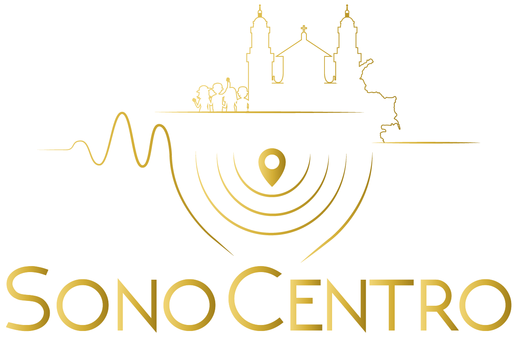
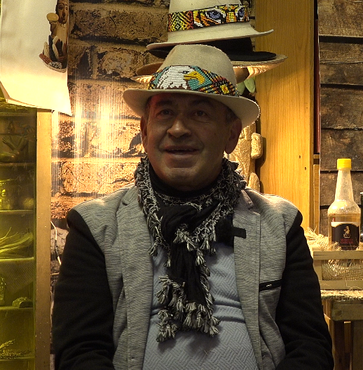
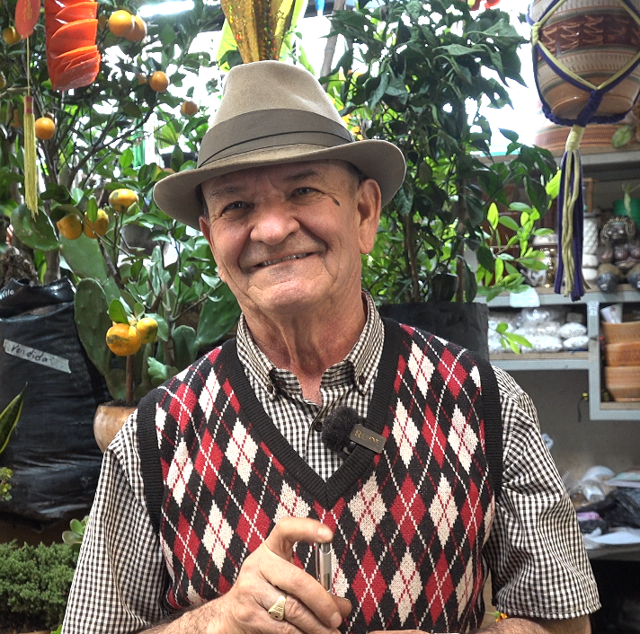
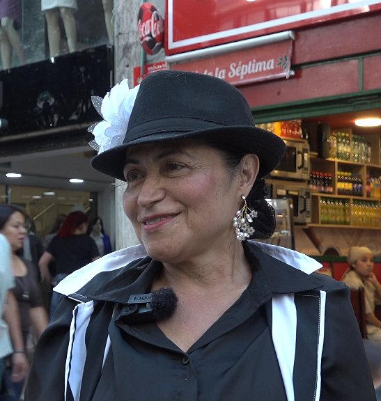

PROYECTO DE GRADO
Universidad de San Buenaventura
DIRECCIÓN GENERAL
Maria Camila Villalba y Catalina Hernández
DESARROLLO WEB Y PROGRAMACIÓN
Maria Camila Villalba
INVESTIGACIÓN Y DOCUMENTACIÓN
Maria Camila Villalba y Catalina Hernández
PRODUCCIÓN AUDIOVISUAL
Maria Camila Villalba, Catalina Hernández, Julian Daza
ENTREVISTAS

Plaza de Bolívar

Catedral Primada

Chorro de Quevedo

Plaza La Concordia

Septimazo

Teatro Colón
AGRADECIMIENTOS ESPECIALES
A todos los habitantes de Bogotá,
quienes con sus historias, voces, recuerdos y formas de vivir hacen vibrar el corazón de la ciudad y mantienen viva su esencia.
A las personas entrevistadas,
por regalarnos generosamente su tiempo, sus experiencias y sus conocimientos. Gracias por compartir con nosotros fragmentos de sus historias y permitirnos mirar Bogotá desde sus propias perspectivas.
A Andrea Landínez,
por ser nuestra primera tutora de proyecto de grado, por acompañarnos en los primeros pasos de este camino y por ayudarnos a encaminar y dar forma a esta idea.
A Juliana Ortigoza,
por asumir la tutoría en la etapa final del proyecto, por sus aportes, orientación y acompañamiento durante el proceso de consolidación de esta propuesta.
A nuestros docentes,
por compartir sus conocimientos, brindarnos herramientas y acompañarnos durante nuestra formación, aportando de una u otra manera a la construcción de este proyecto.
A nuestras familias y amigos,
por su apoyo, paciencia y confianza durante cada etapa de este proceso. Gracias por estar presentes en los momentos de incertidumbre, esfuerzo y también en cada pequeño logro.
Y a todas las personas que, de alguna manera, hicieron parte de este recorrido,
gracias por creer en esta iniciativa y ayudarnos a convertir una idea en una experiencia que busca preservar, descubrir y compartir las historias que hacen de Bogotá una ciudad única.
Este proyecto también es un homenaje a quienes hacen de Bogotá mucho más que un lugar: una memoria viva.
© 2026 SonoCentro. Todos los derechos reservados.